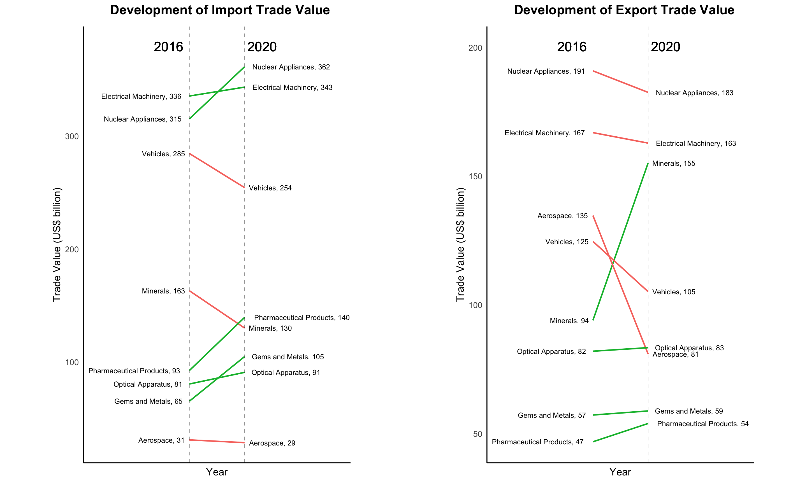

Group 10
Hanming Li (hl847)
Jingyi Qi (jq138)
Jiaqi Song (js4979)
Jiahui Wu (jw1987)
Jiaying Zhuang (jz755)
World trade can be affected by productivity, supply, and demand, diplomatic relations, as well as global incidents such as a pandemic. We are intrigued by the international trade datasets from UN Comtrade because we would like to investigate how the composition of international trade changes for the US in terms of both import and export. The change could be in the share of import and export, could be in the countries that it cooperates with, and could be in the contribution of different commodity types. We consider understanding the changes in the structure of international trade between the US and the world to be crucial because it could provide insights into the US’s industrial structure as well as its economic relationship with other countries.
To further guide our research, we decided to focus on the following questions: How does the annual total trade value between the US and different countries change over 2016-2020, for both import and export? What is the trend in trade value and quantity for different commodity categories between the US and the world, for both imports and exports? How does the ranking of commodity categories measured by trade value between the US and the world change before and after the COVID-19 outbreak, for both imports and exports? What is the impact of exchange rates on international trade between the US and other countries over 2016-2020?
To address these problems, we build five different types of data visualizations, which include a choropleth map, a treemap, a race bar chart, a slop chart, as well as a linked line and stacked bar chart to better dissect data and figure out the messages hidden behind. We expect to see the US to be strong trading partners with Canada, Mexico, EU countries, and China. Moreover, it is expected that the US would rely on imports heavily for commodity goods such as electronic equipment, mechanical equipment, automobiles, etc. Lastly, we reckon a decrease in total trade value is likely to occur in 2020, due to shutdowns caused by the COVID-19 outbreak.
Recent international trade datasets (2016-2020) were collected from the United Nations International Trade Statistics Database. The datasets contain trading information such as year, parties involved, trade type, commodity type, quantity of goods, net weight of goods, and trade value for trades occurred between the US and other nations. We will be visualizing approximately 500,000 observations on international trade. Each observation has 13 associated variables that describe all parties involved in a specific trade (Reporter, Partner), trade types (Trade Flow Code), the type of transportation used for that trade (Mode of Transport), the type of commodity being traded (Commodity Code, Commodity), the amount of commodities being traded (Qty Unit Code, Qty Unit, Qty, Net Weight, Gross weight), the value of traded commodities (Trade Value, CIF Trade Value).
Exchange rate datasets(2016-2020) were collected from Federal Reserve Economic Data. The datasets contain the date and exchange rate (based on US dollar).
The dynamic time-stamped map (fig.1) visualizes the trade value and trading partner countries of the import and export of the US and other countries from 2016 to 2020. The import and export are shown respectively. The map will automatically change with time as default. By dragging the selector on the time scroll, it will show the trading pattern in a specific year. When the time scroll moves, it is clear to see the variance of trading patterns over these 5 years, with the color intensity of the country indicating the quantity of import/export.
For the data preprocessing, rows with Partner as “world” were removed at the beginning. The location information (latitude and longitude of center position) of countries are obtained in the following process. First, convert the country names to 2 digit codes. Second, manually check partners with unknown country codes (17 countries). Next, modify those country names to standard form if they could be located, leave the rest “unknown” and remove those rows. Then, obtain the center point of those countries. Finally, data were grouped by country, and the sum of trade values was calculated and stored.
For the plotting preparation, Boundary Geojson data of each country were collected from API. Country territory patterns were added as multiple polygons on the map, attached with the countries' names and the sum of trade value. The intensity of fill color was obtained from the sum of trade value mapped to a chosen diverging colormap. Timestamps were also added to each polygon.
This graph is an innovative view of our project. Even though map is a very popular type for data visualization, the easiest and most common tools are plotly, geoplot, and so on. However, for this project, a more challenging way to draw the world map is a powerful python library named Folium. When exploring this library, many roadblocks occurred step by step and were finally solved by a great effort. Firstly, geojson boundary data collected from the API had extremely high accuracy and included every single part of the territory for each country as a polygon, which led to very large map size. To cope with this problem, the mainland of each country was selected and each polygon was simplified by delaminating certain points on its boundary. Secondly, the final version of the map changes a lot from that of the midpoint version. At the midpoint, circles were plotted on each country with their size indicating the trade values; however, the change in the circle size was not conspicuous enough. Therefore, the modification in the final version was to use a color map with color intensity indicating trade values, i.e., let the polygon filled in color show up with time on the base map. Furthermore, the country information was added as pop-ups on the country territory polygon for better visual effects.
The final version of the map changes a lot from that of the midpoint version. At the midpoint, circles were plotted on each country with their size indicating the trade values; however, the change in the circle size was not conspicuous enough. Therefore, the modification in the final version was to use a color map with color intensity indicating trade values, i.e., let the polygon filled in color show up with time on the base map. Furthermore, the country information was added as pop-ups on the country territory polygon for better visual effects.
The treemap is designed to showcase trade value and quantity rankings of commodity categories for the US imports and exports from 2016 to 2020. The raw data used consists of 10 csv files with 1,000,000 rows (100,000 rows per file), and 35 columns in each file. Below are steps for data preprocessing:
1. Drop unwanted columns, leaving only Partner, Year, Commodity_Code, Commodity, Qty, and Trade_Value.
2. Aggregation: compute the sum of trade quantity for all root categories (Commodity_Code with a value between 1 and 99) based on the quantities of sub-categories (Qty).
3. Filter desired rows: Partner = “world” and keep only root categories .
4. Drop all rows with either 0 trade value or quantity.
5. Generate a new feature called World, with single string type value “Commodity Categories”, in order to have a single root node in the treemap.
6. Sort the dataframe by [“Commodity”, “World”].
7. Apply a custom function that allows text to wrap.
The cleaned dataframe contains 474 rows and 7 columns. The primary unit of analysis is Commodity, which contains the name of all commodity categories. The most important variables are Trade_Value and Qty, which contain the trade value and quantity for each root commodity category, respectively. It should be noted that Qty is a derived variable. In the original data, there are thousands of sub-categories under 99 root categories, and only sub-categories have data on individual trade quantities. Since the treemap would be difficult to interpret if all sub-categories are plotted, only root categories are included, and their quantities are obtained by aggregating sub-category quantities.
We have two treemaps: one for import (fig.3), one for export (fig.4). Treemaps could show the ranks of commodity categories in terms of both trade value and quantity. The color of each category reflects its total trade value, and the area of each category is proportional to its trade quantity. As both trade value and quantity are numeric and continuous variables, we choose to encode them with area and color. Furthermore, since most commodity category names are quite lengthy, labeling them would be a mess for other types of visualizations. However, this is not a problem for treemaps since there is plenty of space in each rectangle to display the name of the category.
In terms of the design, we feature a dropdown menu that allows the audience to select data from different years. Since we have five years of data and one treemap can only show one year of data at a time, a dropdown menu is a necessary practice to avoid plotting figures for each year individually.
Moreover, we use a tooltip to display details about each category when the cursor hovers on it. The tooltip contains additional information that includes trade year, trade value in US$ billion, and quantity. Instead of displaying all the information in category boxes directly, showing information in the hovering tooltip makes the visualization more concise.
In terms of visual encoding choices, sequential color encoding is used to show the difference between trade values. The darker the color, the greater the trade value. We chose two different color themes for import and export treemaps: teal for import and orange for export. We reckon that the strong contrast between teal and orange, one being cool and one being warm, allows the audience to distinguish between import and export better.
Our original goal was to showcase how trade values and quantities are distributed across different commodity categories by using percentage values to represent their shares in the economy. However, during the making of the prototype, we felt that it is better to use absolute values for both variables because it could emphasize the scales of commodity categories. Apart from this, we stuck to the original plan.
A race bar chart concerning the trade values of different commodity types is produced to intuitively show the changes in the top10 largest commodity categories, both imported and exported, as shown in fig.5 and fig.6. Different colors are assigned to each category to make the trend clear. In the import and export graph, the same category is assigned with the same color to help compare the different positions in the two graphs. The commodity names shown in the chart are simplified from the categories in the original dataset to avoid wordy text. The scale of the trade value is in billions to ensure that there are less zeros and to enhance visibility. The time interval between graphs of different years is set as 800 milliseconds so that the animation is slow enough for watching.
For graph design, first, we rank the commodity categories of each year by trade value and plot the bar chart of the top 10 commodities. Then matplotlib.animation is utilized to join each bar chart to an animation version. There are three interactive options for this visual: once, loop, and reflect. Users can choose according to their needs. Moreover, there are several play options that can allow users to adjust the speed of the animation, either letting users watch the whole animation or view the graphs one by one.
One of our primary interests is to figure out the impact of COVID-19 on international trade. Therefore, it is essential to compare the differences between the total amount of trade values before and in the COVID-19 period regarding different commodities. Although the Race Bar Chart already shows the changes in the total trade value, it concentrates more on the dynamic change year by year, aiming at finding the top 10 popular commodity categories from 2016 to 2020. This slope chart (fig.7) can help catch the audience's eyes immediately on the change between 2016 and 2020 by the slope of each line. Since both import and export trades are significant, two slope charts are plotted respectively and put together to compare the trend for these two types. The color of the slope clearly shows whether the change is positive or negative. For choosing commodity categories, since there are over 90 categories, it is not realistic to plot changes in all categories. Therefore, we mainly focus on the most popular of commodity categories. We only select the top 8 categories based on the plotting result of the Race Bar Chart and perform the visualization in this slope chart.
The original goal of this slope chart was to plot the changes of the top 10 categories in one figure. However, as there were overlapping problems among texts for different categories, two categories with no obvious change between 2016 and 2020 are removed from the original plot for better visualization display. Therefore, the final version of the slope chart only contains the changes of 8 categories.
We conduct several data preprocessing for slope chart:
1. Choose a subset of columns including Year, Partner, Commodity.Code, Commodity, Trade.Value..
2. Filter the data to keep only the trades between USA and World
3. Drop missing values
4. Choose the rows with commodities belonging to the top 8 popular categories found by Race Bar Chart
A linked graph connecting the exchange rate line plot and trade value bar plot is generated (fig.8). The purpose of this graph is to find the top 5 areas in terms of export to the US from 2016 to 2020, and whether the exchange rate in this time range affected their export trade values.
We conduct several data preprocessing for linked chart:
1. Group and sum the Trade Value by Year and Partner to get the total import values of the US from each country every year. (import data from the US means other countries export to the US)
2. Filter the top 10 countries in terms of total Trade Value
3. Replace the Trade Value of EU countries in the top 10 countries with their average Trade Value because the exchange rate will be studied and Eu countries use the same currency.
4. Use average function to convert the daily exchange rate to the monthly exchange rate.
The linked graph is chosen because we want to present two properties (exchange rate and trade value) of countries in the same graph while maintaining the comparison between areas for each property. The linked graph could satisfy these two requirements. In the linked graph, if we click on one property of an object in one graph, we will see the other property of the same object in another graph. When clicking on the blank space, we will see the differences of one property between objects in each graph. For subplots, we choose the line chart for the exchange rate to exhibit the financial trend and the bar plot for trade value to emphasize the quantity.
The original design of interaction in charts was that there were two scatterplots, and when clicking on one point in one graph, it would start moving along time, as well as the point that represents the same object in another scatterplot. However, two scatterplots in one graph are boring. Moreover, the scatterplot may not be appropriate for trade value. Therefore, this design was abandoned.
The variables exchange rate and trade value are chosen because we want to study the relationship between economic indicators and international trade and according to economic theory, the exchange rate has a direct impact on international trade. Colors that are close to the national flag and best distinguish the areas are selected and the color of the same area is identical between the two subplots.
In fig.8 below, we could observe the time series of exchanges rate (per dollar) of the top 5 areas and view the changes in trade value from 2016 to 2020 in each country. By clicking on one line in the left chart, the trade value of the same area will show in the right chart, and vice versa. Then, we could compare the changes in the exchange rate and trade value and derive a conclusion about their relationships.
1. It shows that China, Canada, and Germany had a larger amount of import and export trade value with The US than the other countries from 2016 to 2020.
2. The whole pattern (distribution) of export and import trade value appears to be similar over 5 years.
Figure 1: Choropleth Map on Total Annual Trade Value Between US and Other Countries (Import)
Figure 2: Choropleth Map on Total Annual Trade Value Between US and Other Countries (Export)
1. The category “Nuclear Reactors, Boilers, Machinery, and Mechanical Appliances” makes the greatest contribution to trade value throughout the years for both import and export. However, we observes that the rectangle for Nuclear Reactors is often quite small and it shows its trade quantity are not that high, which has a strong contrast against its dark color.
2. Electrical Machinery and Equipment and Mineral Fuels are always among the top 3 in terms of trade value for export.
3. The category “Vehicles” always has the third-highest contribution in trade value for import. It has a much smaller contribution to exports.
4. "Mineral Fuels", "Inorganic Chemicals", and "Cereals", surprisingly, make the top 3 contributions to trade quantity over the years for export. However, Electrical Machinery and Equipment replace Cereals in terms of trade quantity for import.
Figure 3: Treemap on Trade Value and Quantity for All Commodity Categories (US Import)
Figure 4: Treemap on Trade Value and Quantity for All Commodity Categories (US Export)
1. Nuclear appliances always dominate both the import and export trades, except for two years in import.
2. Aerospace is the only commodity that stays in the top 6 places in export but does not even exist in the bar chart of the import graph.
3. Furniture is the opposite of aerospace. It is in the top 10 of the import data but does not show up in the export graph.
4. Minerals as well as gems and metals are rising year after year from 2016 to 2019, but have experienced a sharp decline in 2020.
5. The trade value of aerospace is stable from 2016 to 2019 but halved in 2020.
Figure 5: The Top 10 Categories of Goods Imported from 2016 to 2020 in the US
Figure 6: The Top 10 Categories of Goods Exported from 2016 to 2020 in the US
In figure 4, the left chart represents the development of the US import trade values for the top 8 commodities from the year 2016 to the year 2020 and the right chart represents those of the US export trade values for the top 8 commodities from the year 2016 to the year 2020. Based on the two charts, it can be observed that the general trend of import trade values increases and that of export trade values decreases. Moreover, the overall largest changes of increasing and decreasing both occur in the right chart of export. To be specific, Minerals increase the most, and Aerospace decreases the most. In terms of import trade values, both Nuclear Appliances and Pharmaceutical Products increase the most, and Minerals decrease the most.

Figure 7: Development of Import and Export Trade Values from 2016 to 2020
1. Brazil's currency depreciated to a great extent in 2020 and Israel's currency appreciated between 2016 and 2020.
2. With the depreciation of Brazil's currency in 2020, Brazil's export to the US decreased a lot in the year 2020.
3. With the slight appreciation of Israel's currency, the US decreased its import from Israel from 2016 to 2020.
4. The exchange rates of the Canadian currency and EURO are relatively stable concerning the US dollar and changes in their exports to the US are also relatively small.
5. No obvious relationship was observed between the exchange rate of the Chinese currency and US import from China.
Figure 8: Relationships between Exchange Rate and Import Trade Values of Top Five Areas from 2016 to 2020
1. China, Canada, and Germany are chief trade partners of The US.
2. The trade pattern of The US over the world is stable for over 5 years.
1. The absence of Vehicles in top categories for export and its high contribution to import suggests that the US has a huge market as well as demand for foreign cars
2. The interesting comparison between the dark color and the small size of Nuclear Reactors, Boilers, Machinery, and Mechanical Appliances indicates that products in this category are extremely expensive and the demand is also considerable.
3. The US has a great demand as well as supply of mineral fuels/oils and inorganic chemicals, which could suggest that the US has a robust chemical production industry.
1. The trade of nuclear appliances is the first place of the world trade of the US most of the time, which shows that it is an important and expensive industry.
2. The absence of aerospace in import shows the world-leading position of the space industry in the US since other commodities are usually balanced in the two trade types.
3. The US does not export much furniture, which shows that furniture is not one of the industry focuses of the US.
4. The sharp decrease in minerals, gems and metals, and aerospace are probably caused by the breakout of COVID-19. The economic center might have shifted to production more related to life and health care.
The demonstration of the top commodities in the world trade of the US reveals the economic center and relative production strength of the country, so it is very relevant to our research. The above discoveries are important in finding the trend of the trade values of each category. For instance, the impact of COVID-19 makes several categories decrease and even halve.
From figure 4, it can be concluded that COVID-19 indeed has a significant impact on the international trade between the US and the other countries in terms of commodity types. The general trend reflected in figure 4 shows that the US had required more import trades and fewer export trades since the COVID-19 started to impact the world economy in 2020. The reason behind this might be that this pandemic highly affects the productivity inside the US by lowering the employment rate. Then, it is an effective strategy to reduce the goods exported to the world and import more goods from other countries to make sure there are sufficient supplies for the US residents.
In terms of the specific commodity types, Mineral is a type decreasing most in import and increasing most in export among all 8 types of commodity. The reason behind this might be that the employment rate of other countries is largely affected by the COVID-19 as well as the US, so their high demand for Minerals results in this rapid increase of the US trade value in export. Meanwhile, Aerospace decreases most among all 8 types in export and both Nuclear Appliances and Pharmaceutical Products increase most among all 8 types in import, which means that the Aerospace business is hit hard by the COVID-19 and those two fields are boosted by this pandemic. From this perspective, it will be a good opportunity to develop these three promising businesses: Minerals, Nuclear Appliances, and Pharmaceutical Products.
The changes in the exchange rate may lead to both positive and negative changes in international trade because there are two subject countries in the trade. For example, the decrease in Brazil's export to the US in 2020 with the depreciation of Brazil's currency indicates the positive relationship between exchange rate and trade value. The reason behind this may be that the production cost in Brazil increased with currency depreciation and the export revenue decreased. Therefore, Brazil decreased its export to the US. the appreciation of Israel's currency and the reduction of US import from Israel shows the negative relationship between the exchange rate and trade value. It may be because the price of Israeli products increased in dollars with an appreciation of the Isreal currency and the US chose to import substitutes from other countries with lower prices.
Although the impact of the exchange rate on international trade is direct, it’s not decisive. World trade can be also affected by productivity, supply, and demand, diplomatic relations, as well as international events like the COVID-19 outbreak. For example, we cannot examine the relationship between the exchange rate of the Chinese currency and US import from China in 2016-2020. However, we do observe a great decrease in US import from China in 2019 and 2020. We could see that the Covid-19 outbreak is a significant factor. The more crucial reason may be the China-United States trade war starting in 2018. The substantial increase in tariffs sabotaged the trade between China and US.
In this report, we have studied the trend of the trade value between the US and the world from 2016 to 2020, both import and export, through visualization. We have produced a dynamic time-stamped map to demonstrate the geographical distribution and changes through time in the trade values between the US and other partners. A treemap has been shown to help investigate the big picture of the quantity and trade value of all the main commodity types in the trade of the US. A race bar chart has been plotted to combine the top 10 commodity categories of each year between the US and the world through animation and reveal the rank change. Also, we have a slope chart to directly show the value difference of each top commodity between and start and the end of our research time range. Finally, a linked graph has been demonstrated to explore the relationship between exchange rates and exported trade values for the top 5 categories.
We have answered our data science questions through five kinds of visualizations, each focused on a specific point. Various packages in Python and R have been applied, including Matplotlib.Animation, Geopandas, Folium, Shapely, Plotly.go, Altair, and ggplot. The project has helped us obtain more insights on world trade, commodity types, US industries, and the economic influence of COVID-19, as well as visualization skills.